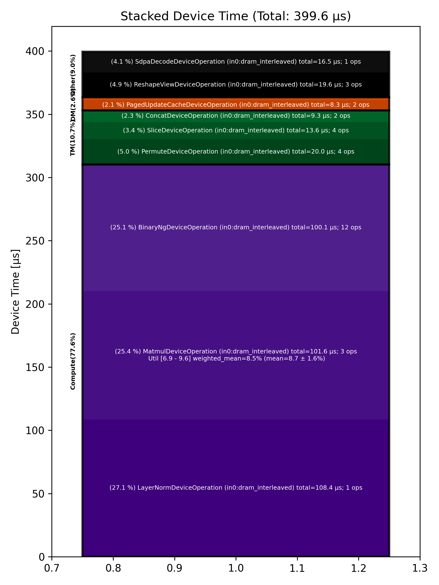

🚀 Performance Report 🚀 ======================== ID Total % Bound OP Code Device Device Time Op-to-Op Gap Cores DRAM DRAM % FLOPs FLOPs % Math Fidelity ------------------------------------------------------------------------------------------------------------------------------------------------------------------------ 8 1.4 % LayerNormDeviceOperation 1 108 μs 1 BF16, BF16 => BF16 34 5.4 % SLOW MatmulDeviceOperation 32 x 2880 x 512 8 42 μs 363 μs 16 41 GB/s 14.1 % 2.3 TFLOPs 6.9 % HiFi2 BF16 x BFP8 => BF16 80 1.2 % ReshapeViewDeviceOperation 5 13 μs 77 μs 72 BF16 => BF16 98 2.4 % SliceDeviceOperation 24 5 μs 173 μs 72 BF16 => BF16 156 3.8 % BinaryNgDeviceOperation 18 16 μs 272 μs 72 BF16, BF16 => BF16 171 4.5 % SliceDeviceOperation 29 5 μs 333 μs 72 BF16 => BF16 221 3.7 % BinaryNgDeviceOperation 19 15 μs 262 μs 72 BF16, BF16 => BF16 231 3.4 % BinaryNgDeviceOperation 2 7 μs 246 μs 72 BF16, BF16 => BF16 274 3.6 % BinaryNgDeviceOperation 20 16 μs 253 μs 72 BF16, BF16 => BF16 306 3.3 % BinaryNgDeviceOperation 20 16 μs 233 μs 72 BF16, BF16 => BF16 329 3.3 % BinaryNgDeviceOperation 0 7 μs 239 μs 72 BF16, BF16 => BF16 379 3.4 % ConcatDeviceOperation 17 7 μs 247 μs 72 BF16, BF16 => BF16 405 6.6 % SLOW MatmulDeviceOperation 32 x 2880 x 64 29 30 μs 462 μs 2 12 GB/s 4.3 % 0.4 TFLOPs 9.5 % HiFi2 BF16 x BFP8 => BF16 429 1.2 % ReshapeViewDeviceOperation 31 3 μs 88 μs 32 BF16 => BF16 473 2.3 % SliceDeviceOperation 12 2 μs 174 μs 16 BF16 => BF16 496 1.3 % PermuteDeviceOperation 5 4 μs 92 μs 16 BF16 => BF16 524 2.3 % BinaryNgDeviceOperation 30 5 μs 171 μs 72 BF16, BF16 => BF16 559 3.3 % SliceDeviceOperation 6 2 μs 244 μs 16 BF16 => BF16 608 1.2 % PermuteDeviceOperation 9 4 μs 86 μs 16 BF16 => BF16 627 3.3 % BinaryNgDeviceOperation 21 5 μs 243 μs 72 BF16, BF16 => BF16 654 1.3 % BinaryNgDeviceOperation 7 3 μs 98 μs 72 BF16, BF16 => BF16 681 2.2 % BinaryNgDeviceOperation 0 5 μs 158 μs 72 BF16, BF16 => BF16 723 3.4 % BinaryNgDeviceOperation 21 5 μs 251 μs 72 BF16, BF16 => BF16 753 1.3 % BinaryNgDeviceOperation 4 3 μs 95 μs 72 BF16, BF16 => BF16 777 2.2 % ConcatDeviceOperation 0 2 μs 166 μs 32 BF16, BF16 => BF16 823 3.7 % InterleavedToShardedDeviceOperation 14 1 μs 279 μs 16 BF16 => BF16 856 3.2 % PagedUpdateCacheDeviceOperation 13 4 μs 236 μs 16 BF16, BF16 => BF16 884 4.9 % SLOW MatmulDeviceOperation 32 x 2880 x 64 12 30 μs 341 μs 2 12 GB/s 4.3 % 0.4 TFLOPs 9.6 % HiFi2 BF16 x BFP8 => BF16 906 1.4 % ReshapeViewDeviceOperation 28 3 μs 105 μs 32 BF16 => BF16 934 2.5 % PermuteDeviceOperation 3 4 μs 185 μs 32 BF16 => BF16 982 3.5 % InterleavedToShardedDeviceOperation 15 1 μs 260 μs 16 BF16 => BF16 996 3.2 % PagedUpdateCacheDeviceOperation 26 4 μs 233 μs 16 BF16, BF16 => BF16 1028 1.5 % PermuteDeviceOperation 26 8 μs 102 μs 72 BF16 => BF16 1074 4.7 % SdpaDecodeDeviceOperation 20 17 μs 334 μs 72 BF16, BF16 => BF16 ------------------------------------------------------------------------------------------------------------------------------------------------------------------------ 100.0 % 34 device ops, 0 host ops, 0 signposts 400 μs 7,099 μs 📊 Stacked report 📊 ==================== Total % Op Code Device Time Sum Op Count Op Category Min FLOPs Max FLOPs Mean FLOPs Std FLOPs Weighted Mean FLOPs ----------------------------------------------------------------------------------------------------------------------------------------------------------------------------- 27.14 % LayerNormDeviceOperation (in0:dram_interleaved) 108.45 μs 1 Compute 25.43 % MatmulDeviceOperation (in0:dram_interleaved) 101.61 μs 3 Compute 6.88 % 9.62 % 8.68 % 1.56 % 8.47 % 25.05 % BinaryNgDeviceOperation (in0:dram_interleaved) 100.09 μs 12 Compute 5.02 % PermuteDeviceOperation (in0:dram_interleaved) 20.04 μs 4 TM 4.91 % ReshapeViewDeviceOperation (in0:dram_interleaved) 19.62 μs 3 Other 4.14 % SdpaDecodeDeviceOperation (in0:dram_interleaved) 16.54 μs 1 Other 3.40 % SliceDeviceOperation (in0:dram_interleaved) 13.57 μs 4 TM 2.32 % ConcatDeviceOperation (in0:dram_interleaved) 9.27 μs 2 TM 2.08 % PagedUpdateCacheDeviceOperation (in0:dram_interleaved) 8.32 μs 2 DM 0.52 % InterleavedToShardedDeviceOperation (in0:dram_interleaved) 2.06 μs 2 DM -----------------------------------------------------------------------------------------------------------------------------------------------------------------------------
